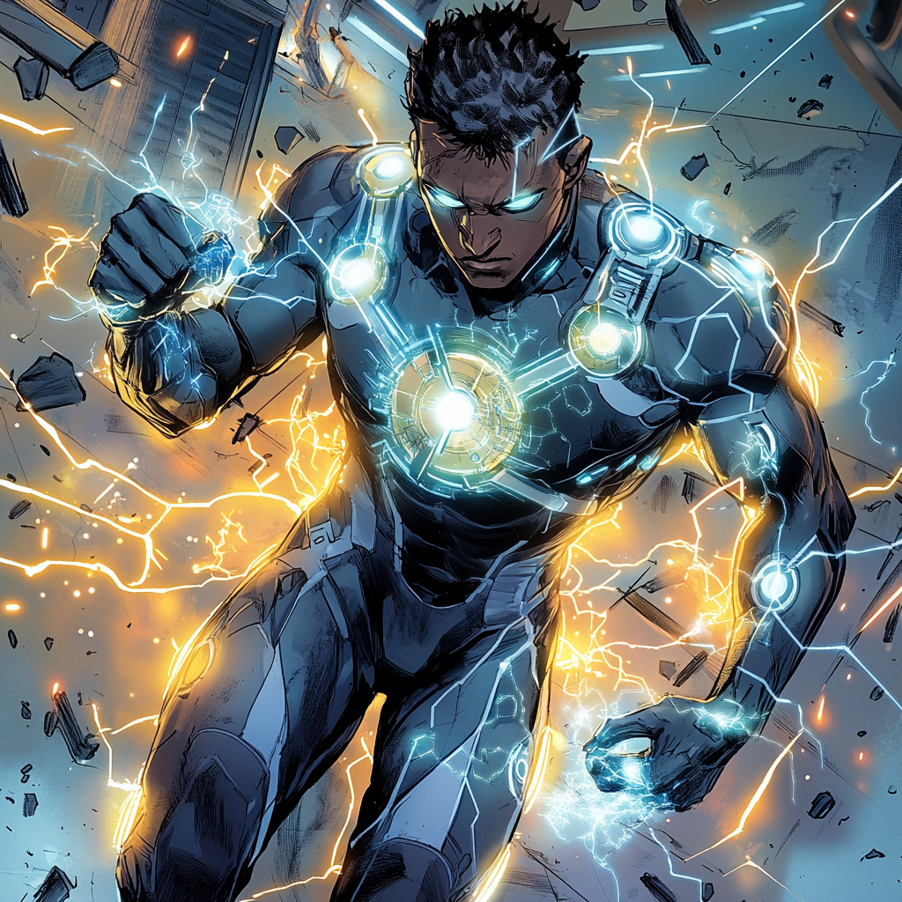

Catalyst: The Chain Reaction

The Pursuit of Perfection
Jacob “Jake” Mercer was never the strongest, the fastest, or the toughest. But what he lacked in raw power, he made up for with an insatiable mind.
Born in Providence, Rhode Island, Jake grew up obsessed with the boundaries of human potential. His mother, Dr. Elise Mercer, was a geneticist studying cellular regeneration. His father, Dr. Henry Mercer, was a pharmacologist working in experimental treatments for neurodegenerative diseases. Science wasn’t just in his blood—it was the family language.
But Jake wasn’t content just to study theories. He wanted to push past the limits of biology, to find the chemical key that could unlock superhuman potential. He breezed through school, skipping grades, publishing papers on metabolic acceleration before most kids his age had finished high school. By twenty, he was a Ph.D. candidate in biochemical augmentation at MIT, working under a government-backed research initiative known as Project Apex—a classified effort to develop next-generation performance enhancers.
The goal? Revolutionize human capability.
The risk? Unknowable.
The Experiment Gone Wrong
Jake wasn’t just a researcher—he was his own test subject.
He spent years perfecting the Apex Formula, an advanced biochemical serum designed to enhance cellular regeneration, boost cognitive function, and push the human body beyond its natural limits. Every iteration brought new discoveries, better muscle recovery, sharper reflexes, increased neuroplasticity. But the formula was still unstable, the results inconsistent.
He needed one final test.
With the lab empty late one night, he injected himself with the latest batch, expecting minor improvements, maybe a slight boost in endurance or reaction time. Instead, his body went into overdrive. His mind burned with an overwhelming flood of knowledge, his cells adapting, mutating faster than he could process.
His vision fractured into layers of perception, like he was experiencing every possibility at once. The pain was unbearable. His nervous system short-circuited, sending violent waves of energy outward, shattering the lab around him. The formula wasn’t just enhancing him, it was rewiring him at a fundamental level.
When he woke up, the lab was in ruins, and his body felt… different. Stronger. Faster. But that wasn’t all. He could sense the energy fields of living things, feel the potential energy in people, even amplify or suppress abilities with thought. The formula had unlocked something new, the ability to manipulate power itself.
But before he could study what had happened, Project Apex found out. And they wanted their asset back.
Running from the Lab
The people funding Project Apex weren’t interested in advancing science for humanity. They were military contractors looking for the next step in super-soldier development. Jake’s transformation wasn’t a breakthrough; it was a stolen prototype, and they weren’t about to let him walk away with it.
The lab was locked down. Security forces swept in; weapons drawn. Jake barely had time to react before his instincts kicked in—his reflexes snapping into overdrive, his body moving before his mind even registered the threat. Bullets slowed. The guards hesitated. He felt their intent before they acted; before he knew it, he had replicated their strength, speed, and agility, using their own power against them.
He wasn’t just enhanced anymore. He was adapting in real-time.
Using his newfound abilities, he broke free, escaping into the streets of Boston with nothing but the clothes on his back and the knowledge that his life would never be the same.
The Academy’s Offer
On the run and with nowhere to go, Jake found himself in the crosshairs of every government agency looking to replicate what he had become. He couldn’t go home. He couldn’t trust anyone. Until the Boston Avengers Academy found him.
BAA had been monitoring Project Apex, monitoring its unethical experiments. When Jake surfaced, they didn’t see a fugitive—they saw a mind too valuable to lose and a power too dangerous to be left unchecked.
They gave him a choice:
He chose the Academy.
Becoming Catalyst
At BAA, Jake took on the codename Catalyst, a fitting name for someone who could alter the power dynamics of any fight.
He quickly found a home on Team Gamma, working alongside other unconventional heroes-in-training. Unlike the bruisers and brawlers, Catalyst wasn’t about raw power—he was about precision.
He could heal injuries with touch, accelerating cellular
recovery beyond natural limits.
He could copy the abilities of those around him, adapting on
the fly to whatever the situation demanded.
He could enhance his teammates, amplifying their powers
beyond their usual limits.
And, if necessary, he could shut down a power, neutralizing
threats before they spiraled out of control.
But the biggest struggle wasn’t mastering his abilities, it was controlling his own mind. His brain operated on an accelerated level, processing data, predicting movements, analyzing chemical compositions faster than his body could keep up.
The Academy helped him refine his focus and channel his chaotic intellect into something usable. Training alongside some of the best minds in the superhero world, he honed his power, his combat skills, and his ability to make split-second decisions under pressure.
The Scientist, Not the Weapon
Despite his new life, Catalyst never forgot why he started this journey. He wasn’t a soldier, he wasn’t a lab rat, and he sure as hell wasn’t a weapon.
He was a scientist.
And while the world saw him as something with an unpredictable ability, he saw himself as something else:
A chance to make things better. A chance to make things right.
The people behind Project Apex were still out there, still experimenting, still trying to create something even more dangerous. And as long as they existed, Jake knew one thing for sure: the world didn’t need more super-soldiers. It needed someone to break the cycle.
And he was more than ready to be the catalyst for that change.